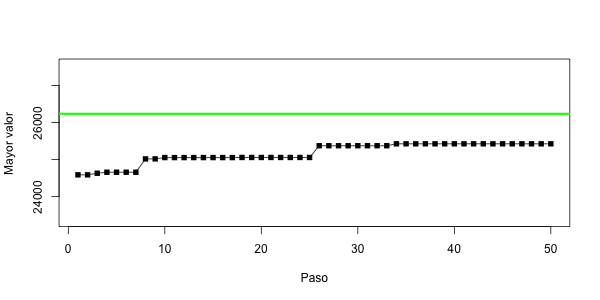

El
Aunque el algoritmo pseudo-polinomial sirve solamente para pesos enteros, nos servirá para esta décima práctica, donde probamos la implementación de un algoritmo genético en R de manera paralela. Los algoritmos genéticos se suelen utilizar en casos donde no existe ningún algoritmo exacto eficiente, pero para fines de aprendizaje, nos conviene comparar qué tan cerca a la solución óptima (que nos da el algoritmo pseudo-polinomial) logramos llegar con un algoritmo genético.
Un algoritmo genético representa posibles soluciones a un problema
en términos de un genoma que en nuestro caso va a ser un
vector de verdades y falsos, indicando cuáles objetos vamos a
incluir en la mochila (TRUE o 1 significa que llevamos el
objeto, FALSE o 0 que lo descartamos de la
selección).
Preparamos algunas subrutinas necesarias:
$ Rscript routines.R
[1] 15 23 27 29 36 40 41 44 44 45 46 48 49 49 59 64 65 66 70 80
[1] 500.0000 565.8155 595.6039 606.7578 653.5830 689.4366 688.2500 718.8454
[9] 716.3356 725.7387 732.0330 755.0191 761.7387 754.5578 833.7630 864.7008
[17] 878.2229 879.4487 911.7800 990.0000
[1] 10421.14
[1] "TRUE 5827.05816804217"
[1] "TRUE 7287.2880398718"
[1] "TRUE 6129.96921164227"
[1] "TRUE 7947.4056911994"
[1] "TRUE 8010.91391823523"
[1] "TRUE 7864.56460228148"
[1] "TRUE 7108.3066366507"
[1] "TRUE 4847.18861936242"
[1] "TRUE 8424.87208116003"
[1] "TRUE 6940.32805759327"
$ python3 routines.py
[50. 49. 47. 49. 49. 16. 22. 15. 15. 52. 37. 32. 66. 22. 32. 44. 37. 52.
31. 80.]
[281.11257821 270.85437302 255.80133135 270.33844709 267.63121476
21.28334711 67.87594539 10. 20.12644991 285.71796637
180.87846785 147.38710607 391.84604387 66.61630247 146.15596017
233.74112386 184.05576428 289.31222177 136.57993965 500. ]
2908.0244399910753
(True, 2672.3932514349176)
(True, 1608.6502651494477)
(True, 1650.2502962183528)
(True, 2079.6330478001755)
(True, 1206.6401150257211)
(True, 2702.6407059951953)
(True, 861.5166211722008)
(True, 2175.155026453038)
(False, 2640.910694636594)
(True, 1409.797104280716)
Es fácil de ver que las soluciones generadas al azar no son tan buenas como la solución óptima. Algoritmos genéticos buscan imitar la evolución permitiendo que las soluciones aleatorias de la población inicial puedan crear nuevas soluciones con dos mecanismos (1) reproducción donde dos soluciones $x$ y $y$ intercambian pedazos uno con otro, creando dos nuevas soluciones, una con el inicio de $x$ y el final de $y$ y la otra siendo vice versa, el punto de corte siendo seleccionado uniformemente al azar; (2) mutación donde una solución crea una réplica de sí misma, cambiando uno de sus valores. Agregamos rutinas para la creación de una población inicial y estos dos pasos evolutivos.
El algoritmo va a ejecutar una cantidad predeterminada de generaciones, primero mutando, luego reproduciendo, y al final cortando el tamaño de la población a la misma que estuvo al inicio de la iteración, dando preferencia a las soluciones factibles. La mejor solución factible presente en la población final es la salida del algoritmo.
$ Rscript basicGA.R
[1] "9590.98364387775 0.0402634096132616"
$ python3 basicGA.py
2869.5397841013387 0.017817446566145305
Pinta bien; probemos con una instancia más grande y visualizamos las mejoras que se logran en la función objetivo.

$ Rscript perfGA.R
[1] "25425.7647065177 0.0308751048077125"
$ python3 perfGA.py
7472.26778118496 0.013695701895394378
Ahí va, pero no le alcanza al óptimo. Además tarda bastante en ejecutarse. Estas broncas se atenderán en la tarea.
Genere tres instancias con tres distintas reglas (nueve en total):
Como un primer reto, cambia la selección de mutación y
de los padres para reproducción a que use seleccion de
ruleta: cada solución se selecciona como padre con una
probabilidad que es linealmente proporcional a su valor de
función objetivo y a su factibilidad, combinando los dos a
alguna función que parezca conveniente e inversamente
proporcional a alguna combinación de factibilidad y objectivo
para la mutación (recomiendo aprovechar el
parámetro prob en sample).
Como un segundo reto, paraleliza el algoritmo genético y estudia los efectos en su tiempo de ejecución con pruebas estadísticas y visualizaciones, variando el número de objetos en la instancia.
https://satuelisa.github.io/simulation/p10.html